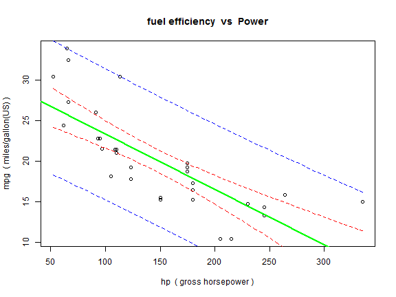

Don't we?
But what does all that data mean? What relates to what, and how?
RAHM
Coursera Data Products course
Don't we?
But what does all that data mean? What relates to what, and how?
ShinyCars, a Shiny Application, lets you understand graphically how each variable in the dataset relates to any other variable
with scatter plots
modelled with linear "least squares" datafit
showing confidence intervals for the model fit
showing confidence intervals for the model point prediction
for example it shows you a figure like this:

for the code, see: http://github.com/robmitch9999/DataProducts/blob/gh-pages/index.Rmd
Click here, http://robmitch9999.shinyapps.io/ShinyCars/
or here!!!